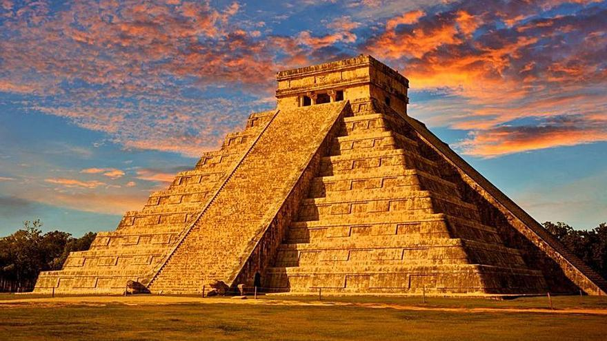

Chichén Itzá es un complejo de ruinas mayas famoso a nivel mundial en la península de Yucatán de México. Una enorme pirámide escalonada, conocida como El Castillo, domina los 6.5 km cuadrados de la ciudad antigua, que prosperó desde aproximadamente el año 600 d.C. hasta el siglo XIII.
Chichén Itzá es una antigua ciudad maya ubicada en la península de Yucatán, México. Fundada alrededor del año 600 d.C., se convirtió en uno de los principales centros políticos, económicos y religiosos de la civilización maya. Durante su apogeo, entre los siglos IX y XII, fue influenciada por la cultura tolteca, lo que se refleja en su arquitectura, como el Templo de Kukulcán, también conocido como El Castillo, una pirámide escalonada dedicada al dios serpiente emplumada. La ciudad también alberga el Gran Juego de Pelota, el Templo de los Guerreros y el Observatorio, reflejando avances en astronomía y matemáticas. Chichén Itzá fue abandonada antes de la llegada de los españoles en el siglo XVI. En 1988, fue declarada Patrimonio de la Humanidad por la UNESCO y en 2007 fue nombrada una de las Nuevas Siete Maravillas del Mundo. Hoy, es un importante sitio arqueológico y un símbolo del legado cultural maya.
La cultura de Chichén Itzá refleja una fusión de tradiciones mayas y toltecas, evidente en su arquitectura, esculturas y relieves. El sitio es un centro religioso y astronómico, con edificios alineados con fenómenos celestiales, demostrando avanzados conocimientos astronómicos y matemáticos. Los rituales y sacrificios eran comunes, especialmente en el Cenote Sagrado, donde se ofrecían objetos y personas a los dioses. La pirámide de Kukulcán, diseñada para crear efectos visuales durante los equinoccios, muestra la importancia del dios serpiente emplumada y el ciclo agrícola. Chichén Itzá es un símbolo del sofisticado legado cultural y científico de la civilización maya.
El Chichén Itzá fue nombrada maravilla del mundo el 7 de julio de 2007
